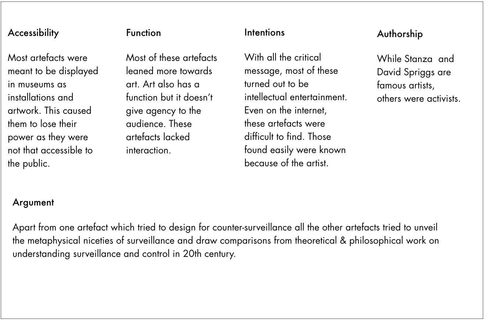
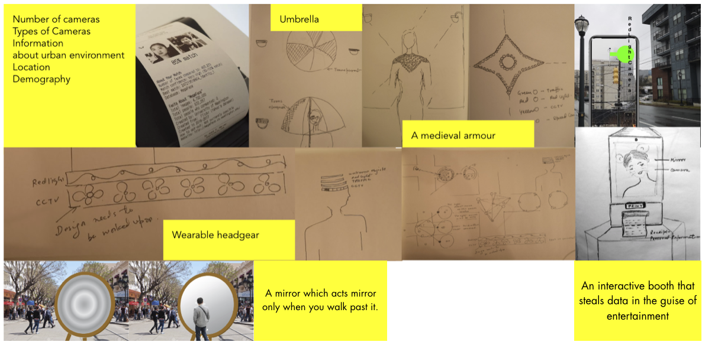

Overview
Problem Statement
One of the central tenets of smart city technologies is the integration of IoT sensors that facilitate non-stop data gathering, keeping an ever-present gaze on to the city. From traffic control, garbage bins, to pollution and gunshot detectors, the city is turned into always sensing and watching mega structure. As the city expands its ever-present gaze on every movement, it becomes more and more difficult for the average citizen to know the location and status of these sensors, what data is being collected, where it is stored, how long it is stored and for what purposes. The invisible gaze of these IoT sensors turns people into a data point incapable of sensing, a number encoding movements, colour, identity, location, time etc.
I wanted to invoke critical mode of inquiry into the emergent digital infrastructure while serving as a point of reflection and conversation around issues of surveillance, control, and citizenship.
Research Question
How can we create affordances for awareness, framing how we understand, question, and critique the idea of all seeing and all-knowing smart city in the context of public surveillance?
Design Goals
We want to design artefact that will turn the gaze back on the city, and while doing so will act as a point of reflection and conversation around issues of surveillance, control, and citizenship.
Project Timeline
It's a two semester project where we are doing formative research in the first semester followed by concepting and ideation. The upcoming semester will be focused on hi-fidelity prototyping, evaluation and iteration.
Theory & Praxis
The philosophical underpinning is where critical design finds its power from. It was extremely necessary that the literature review included theoretical study of the history of the surveillance, watching and being watched and how it has evolved to contextualise the present in social-political flow of events.

Research
Literature Review
The formative research included both theoretical work and the existing design work that has been done to either explain or protest surveillance.

Artefact Analysis
The next step was to analyze existing work ranging from wearables, digital installations to artworks that has been done to critique and resist surveillance. Regarding methodologies and outcomes, most of the existing work broadly fell under the following categories.
Activism, Cautionary Tales
,Conceptual Design, Contestable Futures, Design Fiction, Interrogative Design, Radical Design, Art
and Speculative Design.

The comparison of these artefacts was done on the following parameters. Rather than comparison between each of these we wanted to know the over all pattern to understand their function, context and impact.
Observation
To better understand the surveillance spatially, what it looks like and its pervasiveness, I conducted a field study of North Avenue. North Avenue in Atlanta has always been a focus of smart city and henceforth has led to installation of a lot of IoT sensors etc.
I found that intersections with heaviest traffic where home to greater number of IoT sensors and cameras. At a glance it's difficult to tell which ones are cameras and which ones are traffic sensors. It is easy to detect CCTV because of familiarity but same is not true with other kinds of sensors. With CCTVs made to record covertly it's hard to tell what they are facing.
Semi-Structured Interviews
To evaluate these observations and get a perspective on what most people feel and know about these structures in urban space, I interviewed 5 people. A general pattern that I found, was
- People acknowledged that presence of CCTV did regulate their behavior.
- For many connecting smart city with a surveillance system was not so obvious.
- Most people were not able to explain their understanding of smart city and they showed faith in it.
- Depending on the demography, the tendency to vouch for surveillance and smart city varied.
- Only one person out of 5 noticed surveillance that too when they were relaxing or were sitting in public space.
Conclusion
- Depends who you ask, and in what context, people can be pro-privacy or anti-surveillance.
- Cameras are getting better and cheaper, while live video streams can be remotely accessed, stored on the Internet, and passed around. With face recognition becoming the next big thing, do we need to pay attention to the emergent digital infrastructure?
- Atlanta and Chicago are among the 20 most surveilled cities in the world, according to a recent study from technology research firm Comparitech. The findings compared the number of public CCTV cameras, like those used by government entities, per person in 120 global cities.
- Atlanta, with 15.56 public CCTV cameras per 1,000 people, was the only American city in the top 10, among eight Chinese cities and London.
- But this data also had a problem, Campos spokesperson from Atlanta Police Department said 90% of the cameras belong to private and public entities and not to the city.
- The global CCTV market is expected to grow at USD 33.89 Billion by 2020, approx. 18% of CAGR between 2016 and 2020.
- The increased spending on military and defense has allowed these bodies to conduct R&D activities, resulting in new innovations, which allow them to better manage the security and safety of its people and the borders.
- The competitive rivalry in the video surveillance market is high due to the presence of many key players constantly upgrading themselves in order to gain a competitive advantage over other players.
Ideation & Design
Mood-boards

Theory-board
The complexity and power of critical design lies in the layers and arguments it presents. In order to not stray and also not go down the rabbit hole of presenting too many arguments, I created a theory-board. The theory-board was a collection of quotes from the literature review and the books I read during the research. From Walter Benjamin's Flâneur to Zuboff's Surveillance Capitalism, I made a board of quotes and words that described surveillance, techno-utopianism, control, privacy and cities.
Concept exploration
Refined Concept
The refined concept is to help people explore and store their trail in the real world. The object records their trail recorded by the urban infrastructure. Although they would themselves know where they have been but, this object records only what was recorded by the emergent digital infrastructure. The object will record number of times the person was recorded and the location and by the number of devices.
With the minimal information I want people to think start observing and paying attention to the infrastructure when they walk, ask questions and imagine how they look in these recordings, do they look like data points or they look like themselves. There are various questions and thoughts that can come to mind. I want to aid those thoughts and encourage thinking, awareness and actions.
Form Exploration
I explored forms and the tactile nature of the idea. The ideas revolved mostly around round shapes so that when one holds these people feel like holding them for longer and it touches their entire palm. The idea is to create intimate relationship between the people and the urban space through this object.
Exploration of Visualization
I wanted to strike the right balance between abstraction and use. The form and the visualization should not be too abstract and leaning towards art neither should we bloat it with information to make it utilitarian. I created a mood-board for the visualization.To begin with I created a mood-board to guide the visualization.

Initial Feedback
Currently I am designing sessions for first feedback sessions with design experts, academics and people to see their response towards to gauze their emotional response.
Evaluation & Iterations { Next Step..}
As I conduct the first feedback session with the low fidelity prototype, I will be doing the first iteration and higher fidelity prototype for further evaluation.
With the high fidelity functional prototype we will be doing a longitudinal study where we let people use the object for a few days and see what they felt.